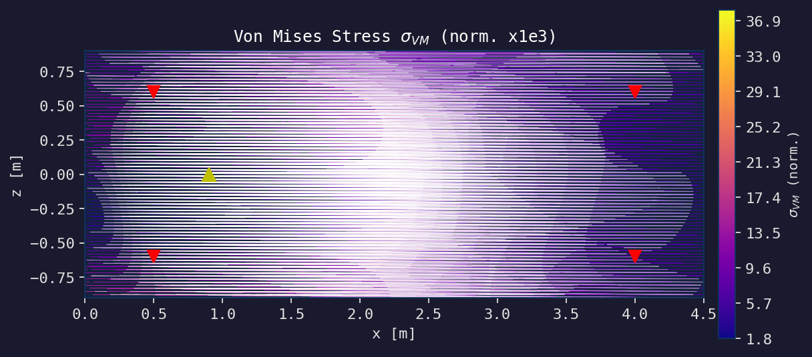

Surrogate Models
Planejado. Treinamento e validação ainda exigem evidências verificáveis.
Ver roadmap →PHYSICS AI SHOWCASE
Explore arquiteturas, problemas inversos, otimização e fluxos de engenharia. Conceitos não são apresentados como resultados validados.
Planejado. Treinamento e validação ainda exigem evidências verificáveis.
Ver roadmap →Planejado. Treinamento e validação ainda exigem evidências verificáveis.
Ver roadmap →Planejado. Treinamento e validação ainda exigem evidências verificáveis.
Ver roadmap →Planejado. Treinamento e validação ainda exigem evidências verificáveis.
Ver roadmap →Planejado. Treinamento e validação ainda exigem evidências verificáveis.
Ver roadmap →Imagens existentes no repositório, não resultados do experimento interativo. A validação exige evidências independentes.



Solução analítica, não surrogate treinado ou CFD/FEM.
u(x,t) = A sin(πx/L) exp(−απ²t/L²)
PRÓXIMO PASSO
Transforme uma ideia ou problema de engenharia em um projeto com escopo, simulação e critérios de validação. Converse com nossa equipe ou conheça o ambiente do Studio.